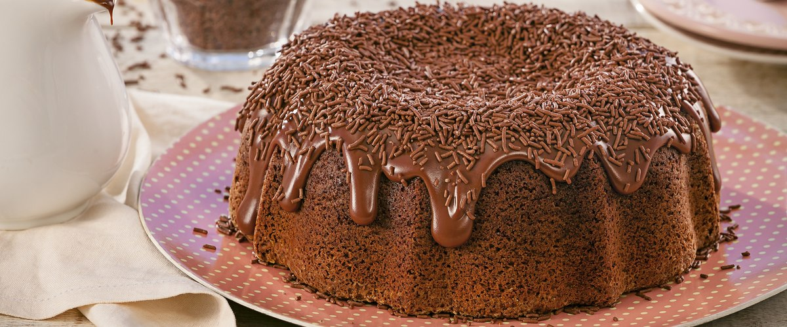

Receita de Bolo
Bolo de Chocolate

Ingredientes
- 2 xícaras de farinha de trigo
- 1/2 xícara de chocolate em pó
- 3 colheres de sopa de margarina
- 3 ovos grandes
- 1 xícara de chá de leite gelado
- 1 xícara de chá de açúcar refinado
- 1 colher de sopa bem cheia de fermento em pó
Como fazer:
- Massa: Bater as claras em neve,reservar. Passar as gemas pela peneira,
Bater as gemas, açúcar é margarina,até obter um creme fofo. Desligue a batedeira e acrescentar o leite,
mexer, acrescentar a farinha é o chocolate, mexer, bater um pouco para misturar os ingredientes, desligue a
batedeira é acrescente delicadamente o fermento é as claras em neve. Assar a 180 por mais ou menos 35 minutos,
em forma 20 cm. untada é enfarinhada somente no fundo.